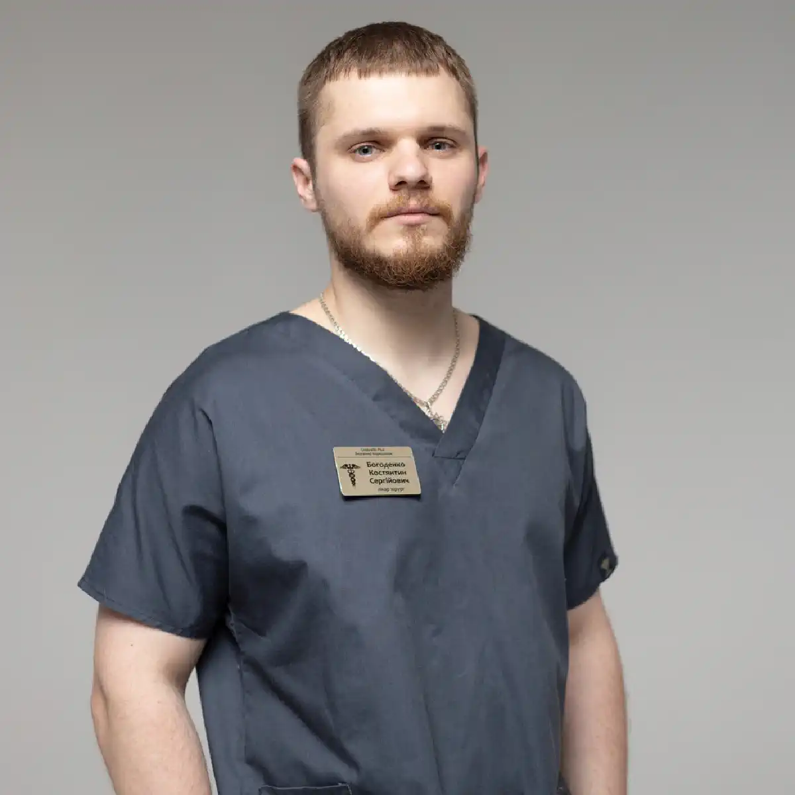

+38(068) 79 72 782
+38(068) 79 72 782Підшивка від наркотиків у Харкові
Радикальне лікування залежності


Безкоштовна консультація, працюємо цілодобово 24/7
Радикальне лікування залежності

Дата написання: 21 лют. 2026 р.
Останнє оновлення: 11 жовт. 2026 р.
Підшивка від наркотиків у Харкові розглядається як один із можливих етапів комплексного лікування, насамперед опіоїдної залежності. У побуті під «підшивкою» часто розуміють медикаментозну блокаду, розраховану на певний період. Конкретний препарат, лікарську форму та спосіб введення має підбирати лікар після обстеження пацієнта. Медикаментозна блокада не усуває психологічних причин вживання та не замінює повноцінного лікування наркотичної залежності. Комплексний підхід може включати медичну стабілізацію, роботу з мотивацією, психотерапію, профілактику зривів і подальше спостереження.
За опіоїдної залежності в медикаментозній терапії може застосовуватися налтрексон — антагоніст опіоїдних рецепторів. Він блокує дію опіоїдів на відповідні рецептори та зменшує очікуваний ефект від вживання героїну, морфіну, кодеїну та низки інших опіоїдів. Сам налтрексон не є опіоїдом і не спричиняє наркотичного сп’яніння. Важливо розуміти, що блокада діє саме щодо опіоїдної системи. Вона не є універсальним методом протидії амфетаміну, метамфетаміну, кокаїну, канабісу або більшості синтетичних стимуляторів. Тому перед процедурою потрібна консультація нарколога в Харкові, під час якої лікар визначає тип залежності та відповідний варіант лікування.
Для медикаментозної блокади опіоїдної залежності може використовуватися налтрексон. Існують різні лікарські форми цього препарату. Вибір конкретної форми залежить від медичних показань, доступності зареєстрованого препарату та індивідуальної схеми лікування. Термін «підшивка» не слід автоматично ототожнювати з будь-яким препаратом тривалої дії. Використовувати потрібно лише лікарські засоби та форми, дозволені для медичного застосування. Якщо пацієнт звертається після нещодавнього вживання наркотиків, спочатку може знадобитися крапельниця при наркотичній інтоксикації або інша симптоматична терапія за медичними показаннями.
Підшивка налтрексоном у Харкові може розглядатися після припинення вживання опіоїдів та оцінювання стану пацієнта. Налтрексон займає опіоїдні рецептори й перешкоджає виникненню очікуваного ефекту від повторного приймання опіоїдної речовини. Розпочинати таку терапію на тлі фізичної залежності від опіоїдів небезпечно: введення налтрексону може спровокувати виражений синдром відміни. Тому перед процедурою необхідно уточнити, яку речовину вживали востаннє, її дозу, тривалість залежності та час останнього приймання. За потреби попередньо проводиться детоксикація від наркотиків, після якої лікар повторно оцінює готовність пацієнта до медикаментозної блокади.
Налтрексон застосовується насамперед за опіоїдної залежності. До цієї групи належать героїн, морфін, кодеїн, фентаніл, метадон, трамадол та інші речовини, що впливають на опіоїдні рецептори. За залежності від стимуляторів підхід буде іншим. Наприклад, у разі вживання амфетаміну, метамфетаміну або кокаїну налтрексон не слід представляти як універсальний засіб захисту від вживання. У таких ситуаціях програма лікування наркоманії в Харкові формується індивідуально та може включати медичну корекцію наслідків вживання, психотерапію і реабілітацію.
За залежності від героїну, фентанілу та інших опіоїдів медикаментозна блокада може розглядатися лише після припинення вживання та безпечного проходження необхідного підготовчого періоду. Особливо уважно лікар оцінює пацієнтів після вживання метадону та бупренорфіну. Ці речовини мають тривалу дію, тому перед застосуванням налтрексону може знадобитися довший період без опіоїдів. Остаточний термін визначає лікар після огляду, оцінювання симптомів і, за потреби, додаткових обстежень. За регулярного вживання фентанілу додатково може знадобитися спеціалізоване лікування залежності від фентанілу.
Медикаментозна блокада може розглядатися для пацієнта з підтвердженою опіоїдною залежністю після припинення вживання та проходження необхідної підготовки. Важливою умовою є добровільне бажання людини продовжувати лікування та дотримуватися рекомендацій лікаря. Підшивку не проводять як екстрену процедуру під час передозування, вираженої ломки або тяжкої інтоксикації. Спочатку потрібно стабілізувати стан і лише потім обирати подальшу терапію для профілактики рецидивів. За вираженого синдрому відміни спочатку проводиться лікування наркотичного абстинентного синдрому, а питання медикаментозної блокади вирішується після стабілізації.
Якщо в організмі зберігаються опіоїди або пацієнт перебуває у стані фізичної залежності, розпочинати лікування налтрексоном без відповідної підготовки не можна. Детоксикація дає змогу припинити надходження речовини, контролювати симптоми відміни та підготувати пацієнта до наступного етапу терапії. Обсяг допомоги залежить від речовини, тривалості вживання, супутніх захворювань і вираженості симптомів. За відносно стабільного стану деякі етапи допомоги можуть проводитися амбулаторно, однак тяжка ломка, порушення свідомості, судоми або розлади дихання потребують стаціонарного лікування. За наявності показань лікар може призначити крапельницю від наркотиків, але інфузійна терапія є лише частиною медичної допомоги й не замінює лікування залежності.
Тривалість періоду без опіоїдів визначається індивідуально та залежить від конкретної речовини, тривалості її дії, тривалості вживання і стану пацієнта. Після короткодіючих опіоїдів підготовчий період зазвичай коротший, ніж після метадону, бупренорфіну та інших препаратів тривалої дії. Не можна орієнтуватися виключно на суб’єктивне покращення самопочуття. Навіть після зменшення симптомів ломки фізична залежність може зберігатися. Надто ранній початок терапії налтрексоном здатний спричинити різко виражений синдром відміни. Якщо припинення вживання супроводжується тяжким станом, пацієнту може знадобитися наркологічний стаціонар у Харкові.
Перед початком лікування лікар збирає анамнез, уточнює, які речовини вживаються, їхні дози, тривалість залежності, час останнього вживання та попередні спроби лікування. Також оцінюються захворювання печінки, нирок, серцево-судинної системи, психічні розлади та препарати, які приймає пацієнт. Залежно від ситуації можуть призначатися лабораторні дослідження, оцінювання функції печінки, аналізи крові та тестування на наявність наркотичних речовин. Особливе значення має виключення продовження вживання опіоїдів перед початком терапії. За потреби пацієнту пропонують тест на наркотики в Харкові, результати якого оцінюють разом із клінічною картиною та даними огляду.
Консультація необхідна для визначення показань і можливих ризиків. Лікар з’ясовує, які речовини вживає пацієнт, як давно сформувалася залежність, коли була остання доза та чи траплялися раніше передозування або виражена ломка. Під час консультації обговорюються варіанти лікування, очікуваний ефект медикаментозної блокади, обмеження та подальший план. Пацієнт має розуміти, що препарат не дає змоги безпечно вживати опіоїди й не гарантує відсутності зриву. Якщо людина не може самостійно приїхати на первинний огляд і її стан дає змогу лікуватися поза стаціонаром, можливий виклик нарколога додому в Харкові.
Налтрексон не можна застосовувати в пацієнта, який продовжує приймати опіоїди, перебуває у стані вираженої опіоїдної абстиненції або зберігає фізичну залежність від них. Протипоказання та обмеження також залежать від конкретного препарату й лікарської форми. Лікар окремо оцінює стан печінки, супутні захворювання, вагітність, препарати, які приймає пацієнт, та інші чинники ризику. Перед початком лікування необхідно враховувати офіційну інструкцію до конкретного лікарського засобу. Самостійне застосування препаратів для блокади без попереднього огляду нарколога неприпустиме.
Деякі етапи підготовки до лікування, зокрема консультація та оцінювання стану стабільного пацієнта, можуть проводитися вдома. Однак інвазивні процедури мають виконуватися лише там, де є належні медичні умови, обладнання та можливість надати допомогу в разі ускладнень. Особливо це стосується процедур, що передбачають хірургічне втручання. Домашній формат не повинен використовуватися, якщо пацієнт має тяжку ломку, порушення свідомості, виражену інтоксикацію, судоми, психоз або інші небезпечні симптоми. У такій ситуації безпечніше організувати госпіталізацію до наркологічного стаціонару.
Перед процедурою пацієнт проходить огляд. Лікар оцінює наявність залишкової інтоксикації або абстиненції, вимірює тиск і пульс, уточнює стан свідомості, перевіряє результати аналізів і підтверджує дотримання необхідного періоду без опіоїдів. Якщо потрібна додаткова стабілізація, спочатку проводиться детоксикація у стаціонарі. Лише після усунення гострих симптомів вирішується питання медикаментозної блокади. Після введення препарату або проведення іншої призначеної процедури пацієнт отримує рекомендації щодо режиму, можливих реакцій і дій у разі виникнення бажання знову вжити наркотик.
Якщо для лікування використовується саме зареєстрована імплантаційна лікарська форма, місце встановлення визначається її інструкцією та лікарем. Процедура має проводитися в стерильних медичних умовах. При цьому не можна плутати імплантацію та пролонговану внутрішньом’язову ін’єкцію. Це різні способи введення препарату, тому конкретний варіант обирається після консультації та оцінювання медичних показань. Спосіб введення потрібно обговорювати з лікарем, а не обирати лише за назвою послуги «медикаментозна блокада від наркотиків».
Якщо конкретна зареєстрована форма препарату передбачає імплантацію, втручання проводиться з дотриманням правил асептики й антисептики. Перед процедурою лікар виключає протипоказання, оцінює стан пацієнта та пояснює особливості подальшого догляду. Після втручання необхідно спостерігати за місцем встановлення. Посилення болю, виражений набряк, почервоніння, виділення, підвищення температури або погіршення загального стану є підставою звернутися до лікаря. Незалежно від форми препарату підшивка має залишатися частиною комплексного лікування залежності, а не самостійною заміною всієї програми.
Тривалість дії визначається конкретним препаратом і лікарською формою. Не можна обіцяти всім пацієнтам однаковий термін блокади без зазначення препарату та схеми лікування. Одні лікарські форми потребують регулярного приймання, інші мають пролонговану дію. Тому термін медикаментозного захисту визначається індивідуально після вибору препарату. Після завершення призначеного періоду пацієнту потрібна повторна консультація щодо лікування наркотичної залежності, щоб оцінити потяг, ризик зриву та необхідність продовження терапії.
Термін дії залежить насамперед від лікарської форми, дозування та характеристик конкретного препарату. Також важливе значення має дотримання пацієнтом призначеної схеми лікування. Не можна самостійно збільшувати інтервал між візитами або вважати, що медикаментозний захист зберігається невизначено довго. У міру завершення дії препарату блокувальний ефект слабшає. Тому після процедури важливо продовжувати спостереження та виконувати індивідуальну програму лікування наркозалежності.
У разі вживання опіоїдів на тлі дії налтрексону очікуваний наркотичний ефект може бути значно послаблений або заблокований. Це не робить вживання безпечним. Особливо небезпечно намагатися збільшувати дозу, щоб подолати дію препарату. Велика кількість опіоїдів може призвести до тяжкого отруєння, втрати свідомості та пригнічення дихання. Якщо вживання все ж відбулося, важливо не приховувати цього від лікаря та в разі погіршення стану звернутися по допомогу при передозуванні наркотиками.
Спроба отримати звичний ефект шляхом значного збільшення дози опіоїду становить серйозну небезпеку. Блокада рецепторів не означає, що наркотик перестає загрожувати організму. Крім того, під час періоду утримання толерантність до опіоїдів знижується. Після послаблення або припинення дії налтрексону доза, яку пацієнт раніше переносив, може виявитися небезпечною та призвести до передозування. За рідкого дихання, неможливості розбудити людину, посиніння губ або втрати свідомості потрібна швидка допомога при наркотичному отруєнні, а не плановий візит до фахівця.
Характер побічних реакцій залежить від конкретного препарату та способу введення. Під час застосування налтрексону можуть виникати нудота, головний біль, порушення сну, слабкість, запаморочення та інші реакції. Для ін’єкційних або імплантаційних форм можливі болючість і місцева реакція в ділянці введення. Особливу увагу приділяють симптомам можливого порушення функції печінки. У разі пожовтіння шкіри або очей, потемніння сечі, вираженої слабкості, тривалого болю в животі або значного погіршення самопочуття необхідно звернутися до лікаря. Після процедури пацієнт повинен мати можливість отримати наркологічну допомогу цілодобово, якщо стан несподівано погіршується.
Медикаментозне лікування залежності не повинно проводитися таємно. Пацієнту необхідно пояснити мету процедури, дію препарату, обмеження, можливі побічні реакції та наслідки вживання опіоїдів після блокади. Добровільна участь особливо важлива, оскільки жоден препарат не може повністю контролювати поведінку людини. Якщо пацієнт не мотивований припинити вживання, однієї медикаментозної блокади зазвичай недостатньо. Родичі можуть звернутися по мотиваційну консультацію нарколога, щоб обговорити безпечні способи спонукати близьку людину розпочати лікування.
Звернення по лікування залежності може відбуватися конфіденційно в межах чинного законодавства та правил медичного закладу. Інформація про стан здоров’я пацієнта належить до лікарської таємниці. Під час первинного звернення фахівець оцінює характер вживання та пропонує найвідповідніший план допомоги. За потреби спочатку проводиться стабілізація, детоксикація, а після неї вирішується питання медикаментозної блокади. Для багатьох пацієнтів анонімна наркологічна допомога в Харкові знижує психологічний бар’єр перед зверненням до лікаря та дає змогу раніше розпочати лікування.
Вартість підшивки від наркотиків починається від 15000 грн.
Завершення періоду дії препарату не означає, що залежність вилікувана. Після медикаментозної блокади необхідно оцінити потяг до наркотиків, емоційний стан, ризик повернення до попереднього оточення та інші чинники можливого зриву. Лікар може запропонувати продовжити медикаментозне лікування, змінити його схему або приділити більше уваги психотерапевтичній допомозі. Особливо важливо не повертатися самостійно до попередньої дози опіоїдів. Після періоду утримання толерантність знижується, через що ризик передозування може зростати.
Підшивка впливає на певний фармакологічний механізм, але не усуває звички, психологічний потяг, соціальні проблеми та причини, які підтримували вживання. Тому медикаментозне лікування бажано поєднувати з психотерапією, профілактикою зривів, роботою з родичами та відновленням соціальної активності. Комплексний підхід допомагає не просто перечекати термін дії препарату, а поступово сформувати стійку поведінку без наркотиків. За тривалої залежності може бути рекомендована реабілітація наркозалежних, тривалість якої визначається індивідуальними потребами пацієнта.
Підшивку не проводять під час гострого передозування або тяжкої ломки. У таких ситуаціях першочергове завдання — стабілізувати життєво важливі функції та усунути безпосередню загрозу здоров’ю. У разі втрати свідомості, рідкого або поверхневого дихання, судом, посиніння губ, сильного збудження чи швидкого погіршення стану необхідно викликати екстрену медичну допомогу. За підозри на передозування опіоїдами медичні фахівці можуть застосовувати налоксон, який блокує дію опіоїдів і використовується за пригнічення дихання. Після усунення гострого стану пацієнту може знадобитися термінова наркологічна допомога в Харкові, подальша детоксикація, спостереження в стаціонарі та підбір комплексної програми лікування залежності.
Телефон для консультації та виклику нарколога додому в Харкові: +38(050-021-69-57)

Статтю перевірено експертом
Робулець Ольга
Лікар-нарколог, ординатор
Можливо цікава стаття:
Що таке сольова залежність (наркотики)

Лікування наркотичної залежності починається з консультації та оцінки стану пацієнта. Лікар уточнює, які речовини вживалися, як довго і в яких кількостях, коли був останній прийом, чи є симптоми абстиненції, хронічні захворювання та попередні спроби лікування. При інтоксикації або вираженому синдромі відміни першим етапом може стати медична детоксикація та стабілізація стану. Після цього складається подальший план лікування залежності.
У деяких випадках медичну допомогу можна надати вдома, однак це залежить від виду вжитої речовини, вираженості інтоксикації або абстиненції та загального стану пацієнта. Перед початком лікування нарколог оцінює свідомість, дихання, артеріальний тиск, пульс і можливі ускладнення. При тяжкому стані або високому ризику ускладнень потрібне лікування в стаціонарі.
Стаціонар необхідний, якщо стан пацієнта неможливо безпечно контролювати вдома. Показаннями можуть бути порушення свідомості, пригнічення дихання, судоми, виражене збудження або психоз, тяжке зневоднення, серйозні серцево-судинні порушення, одночасне вживання кількох речовин або тяжкі супутні захворювання. Деякі види синдрому відміни також потребують медичного спостереження та спеціалізованого лікування.
Програма детоксикації підбирається індивідуально та залежить насамперед від речовини й стану пацієнта. Вона може включати медичне спостереження, корекцію зневоднення та електролітних порушень, симптоматичну терапію та препарати для зменшення проявів синдрому відміни. Для деяких видів залежності існують спеціальні медикаментозні методи лікування. Детоксикація допомагає пройти гострий період, але сама по собі не усуває наркотичну залежність.
Тривалість детоксикації індивідуальна. Вона залежить від речовини, тривалості та частоти вживання, дозування, поєднання кількох речовин і стану організму. У одних пацієнтів найбільш виражені симптоми минають за кілька днів, у інших медичне спостереження та лікування потрібні довше. Точні строки можна визначити лише після оцінки стану пацієнта.
При деяких варіантах легкого або помірного синдрому відміни лікування можливе амбулаторно або вдома під наглядом лікаря. Однак тяжка ломка, виражене зневоднення, порушення свідомості, психічні розлади, судоми або серйозні супутні захворювання потребують стаціонару. Тактика також суттєво залежить від виду наркотичної речовини.
Єдиного строку не існує. Тривалість ломки залежить від речовини, її дози, тривалості вживання та індивідуальних особливостей організму. Гострі симптоми можуть тривати кілька днів і довше, а порушення сну, тривожність, знижений настрій і потяг до речовини іноді зберігаються після завершення гострого періоду. Тому після детоксикації важливо продовжувати лікування залежності.
Наркотична залежність є хронічним, але таким, що піддається лікуванню, розладом. При комплексному лікуванні можна досягти тривалої стійкої ремісії, припинити вживання наркотиків і значно покращити якість життя. Для цього зазвичай недостатньо лише зняти ломку або провести детоксикацію — потрібна подальша робота із залежністю та профілактика рецидиву.
Лікування може включати медичну детоксикацію, медикаментозну терапію, психотерапію, мотиваційну роботу, лікування супутніх психічних і соматичних порушень, профілактику рецидиву та реабілітацію. При опіоїдній залежності можуть застосовуватися спеціалізовані медикаментозні програми. Конкретна схема лікування визначається індивідуально.
Для планового лікування важливі участь самого пацієнта та його готовність співпрацювати з лікарем. Якщо людина відмовляється від допомоги, родичі можуть отримати консультацію спеціаліста та обговорити способи мотивувати її звернутися за лікуванням. Якщо стан людини становить безпосередню загрозу життю — наприклад, при передозуванні, порушенні свідомості або дихання — необхідна екстрена медична допомога.
Не варто обмежуватися погрозами, конфліктами або спробами силоміць змусити людину лікуватися. Родичі можуть звернутися до спеціаліста без пацієнта та отримати рекомендації щодо подальших дій. Мотиваційна робота допомагає людині краще усвідомити наслідки вживання та поступово сформувати готовність до лікування.
Не кожному пацієнту потрібен однаковий формат реабілітації, однак після детоксикації подальше лікування є дуже важливим. Детокс усуває або зменшує гострі прояви інтоксикації та синдрому відміни, але не вирішує психологічні й поведінкові механізми залежності. Реабілітація, психотерапія та інші програми підтримки допомагають закріпити тверезість і знизити ризик повторного вживання.
Так, у низці випадків нарколога можна викликати додому для оцінки стану пацієнта після вживання наркотиків. Лікар визначає вираженість інтоксикації або абстинентного синдрому та вирішує, чи можливе безпечне лікування вдома, чи потрібна госпіталізація. При втраті свідомості, вираженому пригніченні дихання, судомах, тяжкому збудженні або підозрі на передозування необхідно звертатися по екстрену медичну допомогу.
Анонимно

Помогли при наркотической зависимости
Номер телефону:
+380 (68) 797 27 82
+380 (50) 021 69 57
Адресу наркологічного центра вашого міста уточнюйте за
телефоном
Працюємо: Київ, Одеса, Львів, Харків, Дніпро, Запоріжжя,
Черкасах, Чугуєві, Чорноморську, Кам'янському
Telegram: t.me/umbrellaplus
Графік работы: Цілодобово